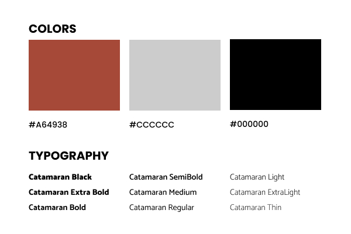
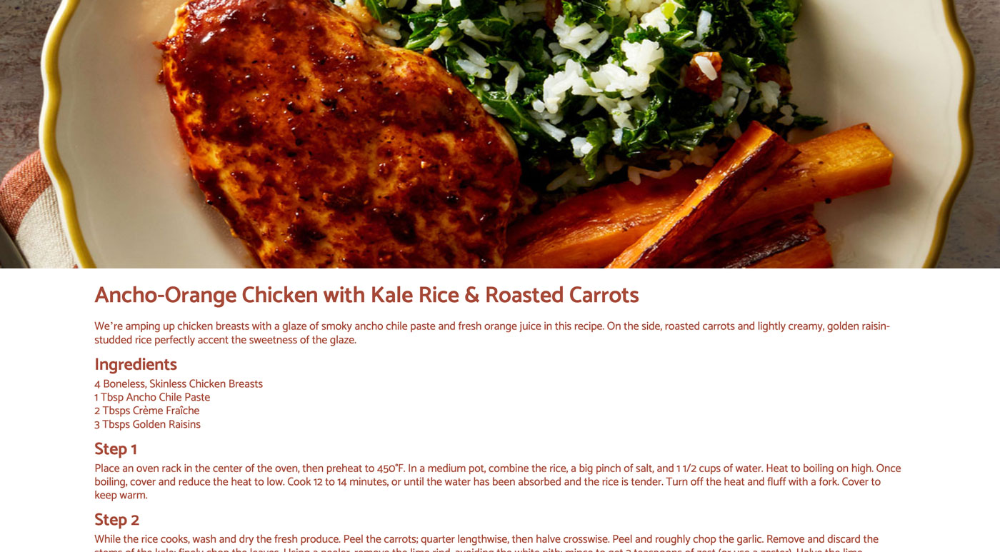
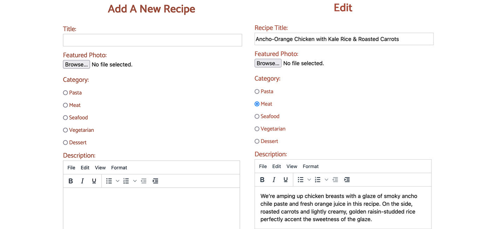

Recipedia
The Overview
The purpose of this project is to learn server-side scripting language, in this case it is php, as well as how to interact with relational database content through web pages. As a result, building a recipe site is considered to be the most suitable to put those skills into practice.
Context and Challenges
The timeline for this project is 10 weeks, with the project being broken down to 3 different phases, alpha, beta, and final. The goal of this project is to create a fully functional recipe site where all the recipes are pulled from the database. The project is considered to be a success if the users can add, edit, delete, and search for a recipe without any problem. One of the main challenges for this project was organizing code. Compared to my other projects, this project was a lot more complicated, and as a result, the code got messy really fast. Another challenge that I faced while doing this project was migrating from local environment to production environment, as many links and paths I wrote broke during the process.
Process and Insight
The first phase of the project, the alpha phase, was dedicated to designing the UI and UX of the site. As I got my design locked down, I moved on to the next phase of the project, the beta phase. The first thing that I did in the beta phase was establishing the database, connecting my project to the database, and then making sure that all my forms and queries were working as intended. Writing queries turned out to be a lot more complicated and prone to errors than I originally thought, which also resulted in me spending a lot of time fixing queries syntax. As I got the majority of my site functionality working, I furthered my project to the last phase, the final phase, where I added a search system to the site as well as fixing visual bugs to make sure the site looked polish and professional.
The Solution
As I mentioned earlier, one of the challenges that I faced while doing this project was organizing code. After getting lost in my own code a handful of times, I decided to clean my code up by either splitting my code up into different files or adding comments to each section. Doing that helps debugging a lot easier, as well as allows me to have an idea of what was going on in the code.
Another problem that I faced was migrating from local environment to production environment, as many links and paths broke in the process. To solve that problem, I edited my config file to have a different root url that would be used on production environment compared to that used on local environment. I also made use of JavaScript to redirect users to pages I want them to go after realizing that header(Location:…) did not work on my production environment.
The Result
I believe 10 weeks were only enough to deliver the most basic and barebone recipe site. Yet, I still consider the project to be a success, as the users can easily add, edit, delete, and search for any recipe on my site. In the future, if possible, I would like to add a login system to my site to enhance the site. I think it is a great feature to have on my site as well as a great chance for me to improve my php skill.